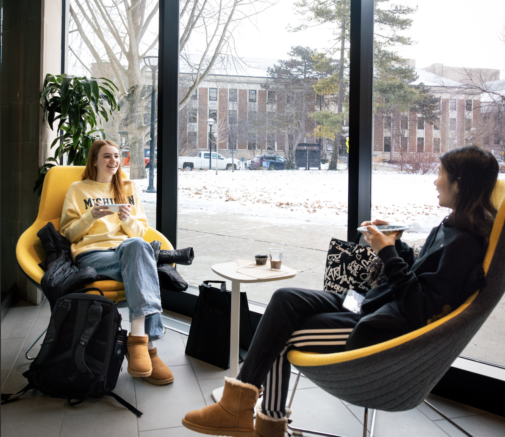
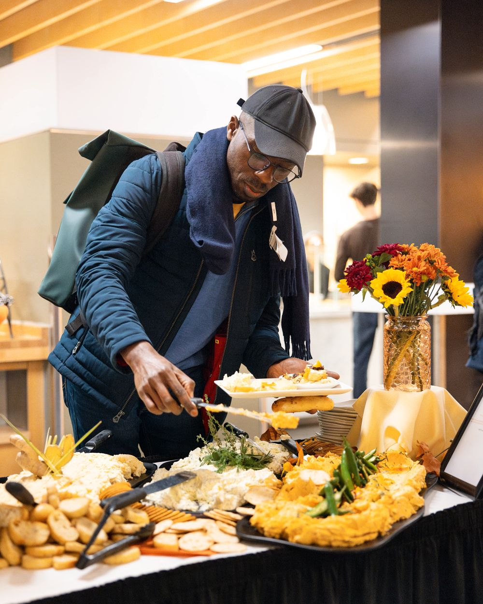

About Basic Needs
The Basic Needs website by Student Life at the University of Michigan addresses the essential needs that facilitate everyday living and ensure students' fundamental requirements are met. Basic Needs promotes fair and equitable access to food and other basic resources. Because when each of us has what we need, our community is stronger and our students are more successful. The website has been created to share information about the resources available to students. It’s also a place to share data and research that will help the U-M community understand how important this work is for the entire campus.

Support Categories
For a comprehensive list of resources offered by Basic Needs, visit: https://basicneeds.studentlife.umich.edu/resources/
Critical or Emergency Indicents
Support for students who are experiencing or have been impacted by a conflict or critical incident.
Finance
Financial resources to help with immediate and long-term needs, such as emergencies, college funding and employment.
Food
Services to help students maintain healthy habits, find access to food, and seek assistance when struggling to buy food.
Health Care
Resources for students to access health care, including medical, dental, and mental health services.
Housing & Transportation
Campus and community resources for securing housing, accessing transportation, and seeking assistance for a variety of housing needs.